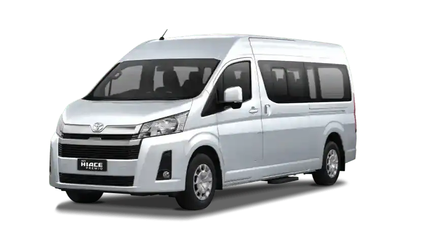
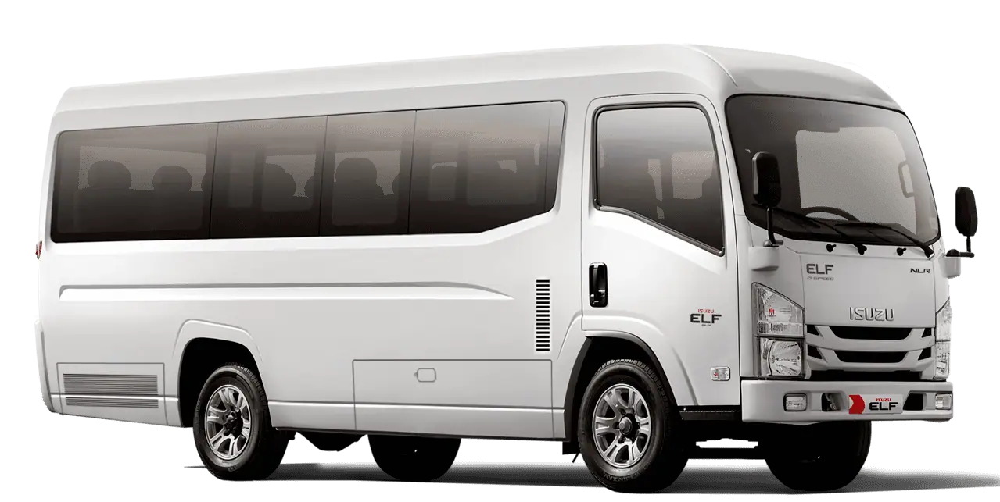

Independent Trans melayani travel door to door dari Jember menuju Surabaya, Juanda, Bali, dan Jakarta dengan armada nyaman dan driver profesional.
Destinations
Customers
Service
Independent Trans telah dipercaya oleh banyak pelanggan dan berbagai jaringan agency travel di Indonesia dalam melayani perjalanan antar kota maupun antar pulau. Dengan pengalaman menangani penumpang travel, bandara, hingga penggantian tiket kapal dan pesawat saat terjadi keterlambatan, kami selalu mengutamakan tanggung jawab dan kenyamanan customer dalam setiap perjalanan.
Kami juga memiliki relasi dan kerja sama dengan berbagai agency travel seperti Nusa Trans, Smile Travel, Paramitha.id, Perdana Trans, Lintas Nusa, dan banyak jaringan travel lainnya yang telah mengenal pelayanan Independent Trans. Komitmen kami adalah memberikan pelayanan profesional, komunikasi yang jelas, serta solusi terbaik ketika terjadi kendala di perjalanan.
Jika terjadi keterlambatan atau kendala operasional, tim kami selalu berusaha memberikan kompensasi, membantu negosiasi dengan customer, serta memastikan penumpang tetap mendapatkan pelayanan yang aman, nyaman, dan bertanggung jawab sampai tujuan.
Layanan travel nyaman dan terpercaya dengan sistem antar jemput door to door, armada bersih full AC, serta perjalanan aman bersama driver berpengalaman.
Travel Jember Surabaya terpercaya dengan layanan door to door, armada nyaman full AC, dan jadwal keberangkatan rutin setiap hari.
Perjalanan nyaman setiap hari untuk rute Jember, Surabaya, Bondowoso, Lumajang, Probolinggo, dan Pasuruan.
Layanan perjalanan fleksibel dengan driver profesional untuk kebutuhan pribadi, keluarga, maupun bisnis.


Jember, East Java, Indonesia
+62 821 3299 3003
independenttrans@gmail.com
24 Jam Customer Service